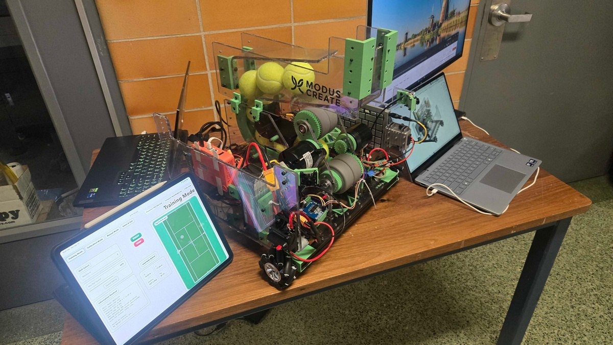
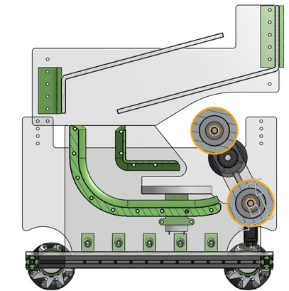
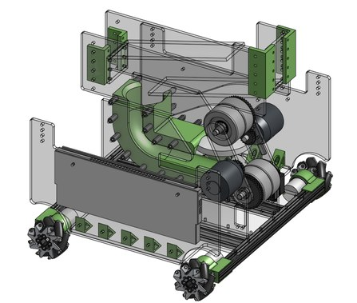

Tennis Buddy
Our team had 24 hours to build a tennis training robot with adjustable spin and launch angle.
I led the robot design and built the shooter and hood, while helping integrate the drivetrain, loading, and controls.
I used two 4,000 W BLDC motors for differential-speed flywheels and a servo-driven herringbone gear mechanism for the hood. The robot combines a nine-ball gravity feed, compliant-wheel indexer, mecanum drivetrain, and ESP32 Wi-Fi control.
We completed the build, including machined polycarbonate plates, within 24 hours. The shooter supports topspin, backspin, and flat shots with an adjustable launch angle.



